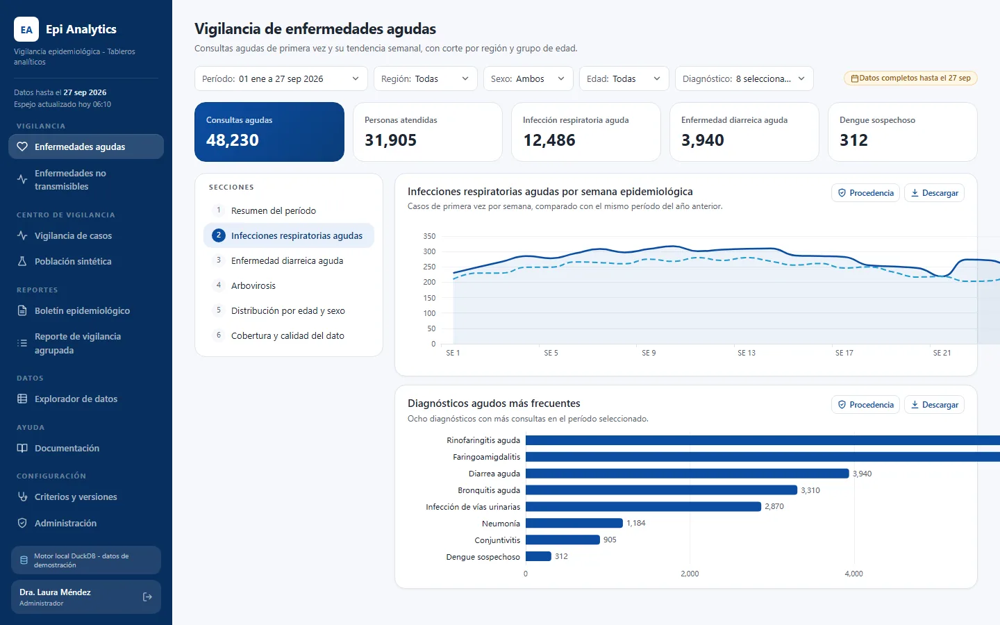
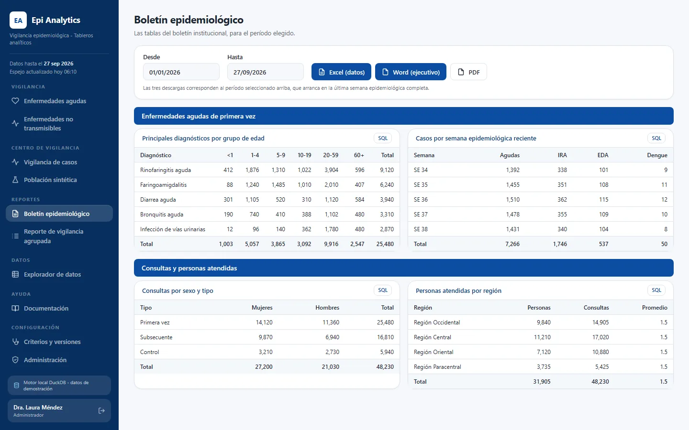
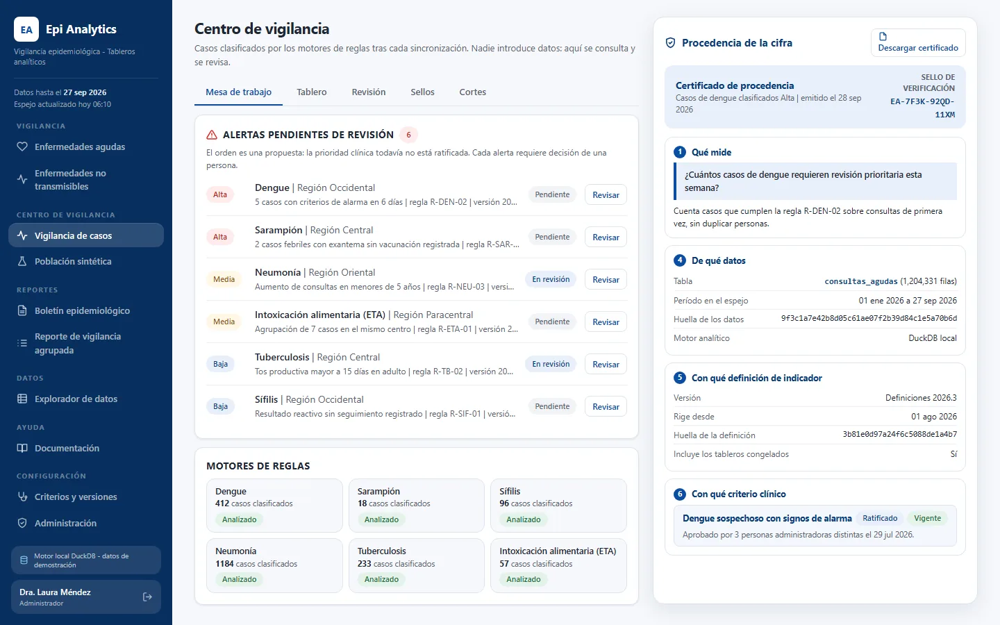

Epidemiological analytics platform
Epidemiological surveillance platform that mirrors a cloud warehouse view into a local analytical database, and serves dashboards, bulletins, reports and a surveillance center on top of that copy, so that querying costs nothing, answers in milliseconds and every figure can be audited.
- 6 to 20users
- 0warehouse cost per interaction
- 4.18 millionappointments, as of 2026-08-24
In active use. Figures as reported in 2026. See the screens
Problem
The epidemiology unit worked from a cloud data warehouse. Four problems came up together:
- Query cost. Every dashboard interaction that hit the warehouse cost money and, at volume, raised security alarms on a monitored data source.
- Slow reports. Interactive filtering over millions of appointments was not fast enough on demand.
- Figures nobody could defend. A number on a screen could not be traced to the rule that produced it, who looked at it, or how to reproduce it.
- Slow access to information. Getting a specific cut of the data meant waiting for someone to produce it.
Solution
A single application, one container image with four roles, that copies the warehouse view once per synchronization cycle and serves everything from the copy.
Cloud warehouse (read-only) -> one scan -> Parquet -> local analytical database -> API + dashboards
- Cost moves from "per query" to "once per synchronization cycle". The synchronization runs a dry-run first and caps billable bytes; the dashboards never touch the cloud.
- Dashboards are declarative: each chart is a specification (query, encoding, filters) rendered by a generic front end, and a chart's filters are derived from its own query, so it cannot claim to filter what it does not.
- Auditable figures: any number can open a provenance certificate with the exact query and a deterministic fingerprint of the table, exportable to Word. Metric definitions are versioned, a published version freezes the catalog, and a command reproduces a figure from a given version.
- Freshness is shown, not hidden: each chart carries a data-cutoff stamp.
- Reporting: an epidemiological bulletin and executive reports in Word and Excel.
- Surveillance center (the rules-based engine below), integrated into the same application with its own reviewer role.
Benefits of the rules-based surveillance engine
The surveillance center runs a rules-based engine that was integrated into the platform. Its rules are deterministic and versioned rather than learned, so the same input always gives the same classification, which is what lets a clinician and an auditor defend a result.
- It runs six rule engines (dengue, measles, measles emergency, syphilis, pneumonia, respiratory symptomatic) that classify and prioritize cases, so reviewers start from the cases that need attention instead of reading every record.
- It does not diagnose and does not declare outbreaks: it surfaces signals for human review, and reviewers record their judgment and notes on each case.
- Its logic is separated from the interface and protected by golden tests, so a rule change is checked for equivalence before any result changes.
- Analyses run automatically after each synchronization from the analytical copy; nobody uploads files, which removes a manual step and a source of inconsistency.
- Every relevant action leaves an audit record, and access is limited by role (a dedicated reviewer role exists).
The engine originated as a separate surveillance project. I ported and integrated it into the platform, and extended it together with its original team: it was tested for equivalence and connected to the shared mirror and roles.
Impact
Figures as of August 2026:
- Users: 6 to 20.
- Query cost against the warehouse: zero per interaction, measured in the project's performance notes. One historical scan of the source view feeds the mirror.
- Reports: dashboards answer from a local copy; a warm cache answers in about 1.5 ms, and the audit on 2026-09-29 measured all charts responding without failure.
- Figures can be audited: provenance certificate, fingerprint, versioned definitions and a reproduce command.
- Faster access to information for the unit, through self-service dashboards instead of ad hoc requests.
- Scale: about 4.18 million appointments in the analytical table as of 2026-08-24.
My role
- Requirement and domain, with the epidemiology unit and the medical management area, including a formal dimensional-model request for a dedicated analytical dataset.
- Screen and dashboard design.
- Development with AI assistance, following written specifications, decision records and audits.
- Prepared the release package (containers, configuration, migrations, documentation) and the handoff to the infrastructure team.
Stack
Versions from the project's exact-pinned constraints file and stack document:
- Back end: Python 3.12, FastAPI 0.139.0, uvicorn 0.50.2, Pydantic 2.13.4.
- Analytics: DuckDB 1.5.4, pyarrow 24.0.0, dbt for the transformation models, Parquet exchange with the warehouse via the BigQuery client (google-cloud-bigquery 3.42.1).
- Surveillance persistence: PostgreSQL 16, SQLAlchemy 2.0.52, Alembic 1.19.1, Procrastinate 3.9.0 (job queue).
- Front end: React 18.3.1, Vite 7.3.6, TypeScript 5.9.3, Apache ECharts 6.1.0, Vitest 4.1.11.
- Quality: pytest 9.1.1, ruff 0.15.20, mypy 2.2.0 in strict mode.
- Delivery: Docker (pinned base images), CI workflow with a dependency vulnerability check.
Human in the loop in this project
Evidence paths below refer to private repositories and are shown as plain text.
- Requirements from users, written and dated:
odd/tasks/observaciones-agudas.md(13 observations, 2026-09-27) andapp/docs/REQUERIMIENTO_BI_GERENCIA_MEDICA.md(2026-09-16). - Written specifications before code:
openspec/changes/archive/2026-09-27-*/proposal.md,design.md,tasks.md. - Human decisions recorded with reasons:
odd/tasks/correcciones-auditoria-2026-09-29.md(decision table). - Independent audit with double verification of the findings that decide the verdict:
app/docs/AUDITORIA_[SYSTEM]_2026-09-29.md. - Dated decision records:
app/docs/adr/0001-stack-hibrido.md,0002-datos-costo-cero.md,0003-dbt-transformacion.md. - Every dependency logged with exact version and reason, and vulnerable versions rejected:
app/docs/STACK_TECNOLOGICO.md, enforced byapp/backend/tests/test_constraints_imagen.py. - Integration log with a verification result per iteration:
app/docs/INTEGRACION_[ENGINE].md. - Handoffs:
app/docs/CONTINUIDAD.md,app/docs/ENTREGA_A_INFRAESTRUCTURA.md. - Material for presenting and defending the system:
app/docs/PITCH_Y_DEFENSA.md.
Status
In active use by the epidemiology unit. It currently runs against a local mirror of the warehouse view; moving the source to a dedicated analytical dataset is the next planned step and does not require new development.
Screens



Information in these screens has been anonymized.